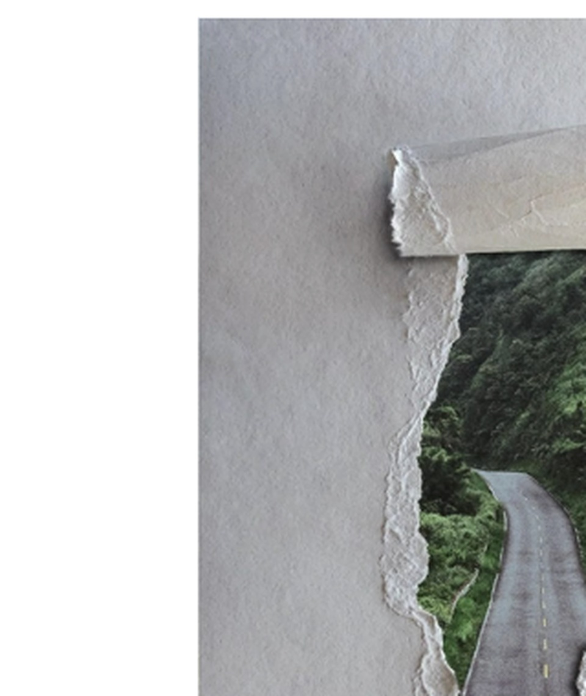
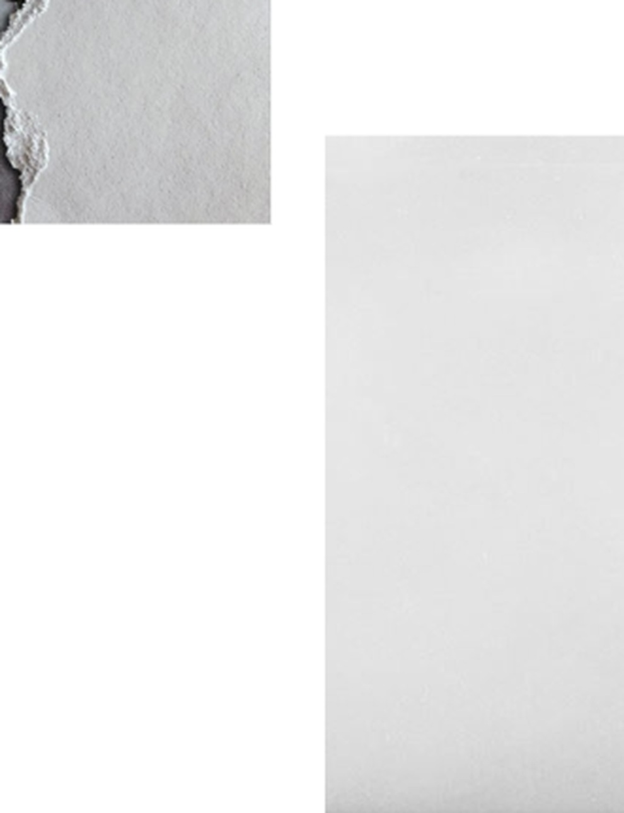
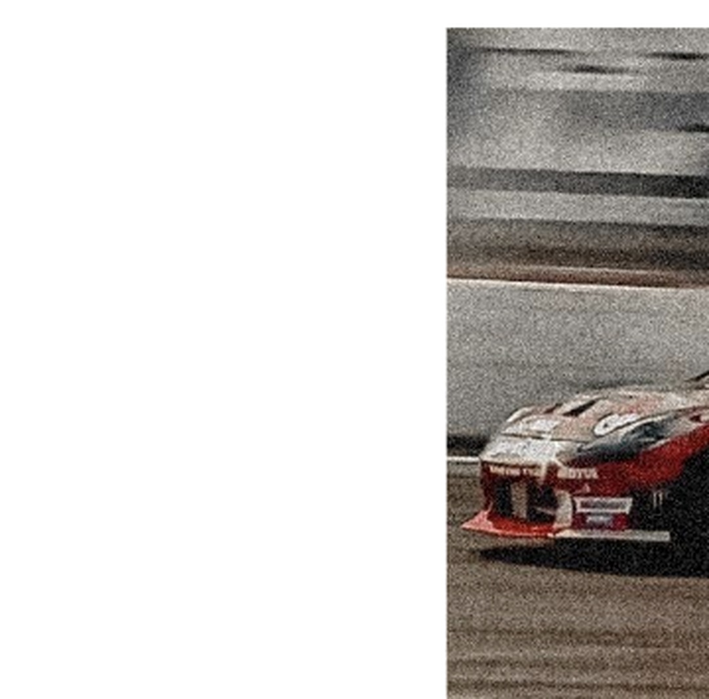
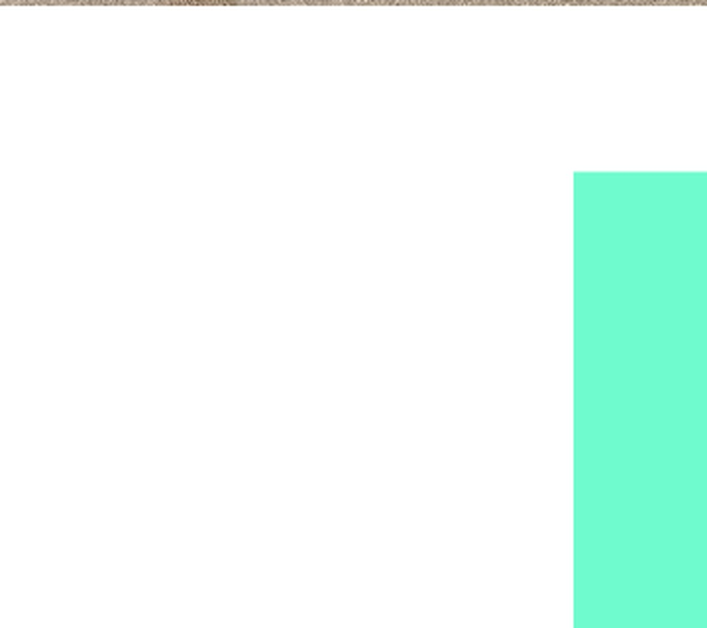

01
THE ORIGIN
SUB.9는 어디에서
시작되었는가.
Sub.9는 마라톤의 ‘Sub-2’에서 출발했습니다. 불가능하다고 여겨졌던 2시간의 벽을 깨려는 사고방식을 F1 in Schools로 가져왔습니다.
02
0.91
현재 가장 빠른 기록으로 여겨지는 시간.
우리가 넘고자 하는 벽.
03
우리는 빠른 차만
만들지 않습니다.
우리는 한계를 정의하고,
실험하고, 실패하고,
다시 설계합니다.
04
PUSH TO LIMIT
Formula One에서 “Push”는 더 강하게, 더 빠르게 달리라는 의미입니다. Sub.9에게 PUSH TO LIMIT은 우리 자신을 한계까지 밀어붙인다는 뜻입니다.
05 / HOW WE FORMED
팀이 만들어진 과정.
- 01하나의 공통된 목표
- 020.91초의 도전을 세분화
- 03네 개의 전문 역할 정의
- 04SUB.9 아이덴티티 개발
- 05차량 설계와 테스트
06 / BUILDING THE IDENTITY
네 개의 이미지에서
하나의 팀으로.




07 / BRAND SYSTEM
SUB.9 / PUSH TO LIMIT
OLO#00FFCC
BLACK#000000
WHITE#FFFFFF
YELLOW#FFFE00
Olo가 새롭게 정의된 색이라면, Sub.9는 전에 없던 결과를 만드는 팀입니다.